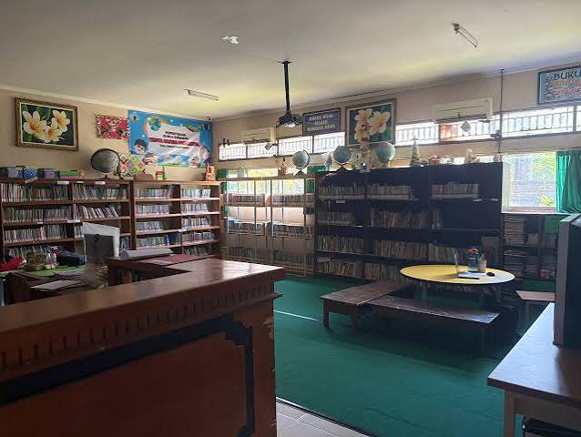
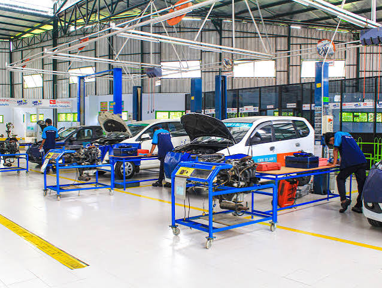

SMK Taruna Jaya Prawira |
|
| THE WINER |
SMK Taruna Jaya Prawira merupakan salah satu sekolah menengah kejuruan yang berfokus pada pendidikan dan pengembangan keterampilan siswa agar siap menghadapi dunia kerja. Sekolah ini memberikan pembelajaran yang memadukan pengetahuan teori dengan praktik sesuai bidang keahlian yang dipelajari. Selain itu, siswa juga dibimbing untuk memiliki sikap disiplin, bertanggung jawab, mandiri, dan mampu bekerja sama dengan orang lain.
Dalam kegiatan pembelajarannya, SMK Taruna Jaya Prawira berupaya menciptakan lingkungan pendidikan yang mendukung perkembangan potensi setiap siswa. Berbagai kegiatan sekolah dapat menjadi sarana bagi siswa untuk mengembangkan kemampuan akademik maupun keterampilan nonakademik. Dengan bekal ilmu, keterampilan, dan karakter yang diperoleh selama bersekolah, diharapkan lulusan SMK Taruna Jaya Prawira mampu melanjutkan pendidikan ke jenjang yang lebih tinggi maupun berkontribusi secara positif di dunia kerja dan masyarakat.
| No | Program Keahlian | Lama Belajar |
|---|---|---|
| 1. | Rekayasa Perangkat Lunak | 3 Tahun |
| 2. | Teknik Komputer & Jaringan | 3 Tahun |
| 3. | Teknik Kendaraan Ringan | 3 Tahun |
| 4. | Teknik Instalasi Tenaga Listrik | 3 Tahun |
| 5. | Teknik Pemesinan | 3 Tahun |
| 6. | Teknik Pengelasan | 3 Tahun |
| Laboraturium Komputer | Perpustakaan | Bengkel Praktik |
 |
 |
 |